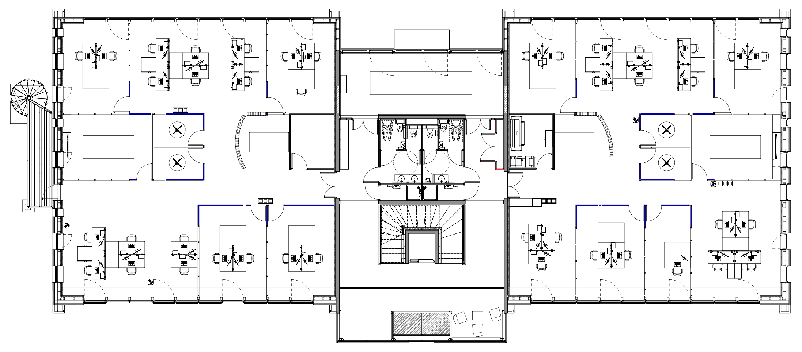

Jeu interactif
Tu as une minute pour aider Pimpin le technicien à reboucher un maximum de fuites de fluide frigorigène !
Score : 0 kg CO2e non rejetés dans l'atmosphère (0/0 fuites).
Temps écoulé : 0s.

N'hésite pas à partager ton score sur Teams 😉